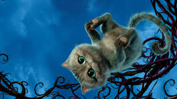

Чеширский Кот (англ. Cheshire Cat, также Масленичный Кот в переводе В. Набокова) — персонаж книги Льюиса
Кэрролла «Алиса в Стране чудес». Постоянно улыбающийся кот, умеющий по собственному желанию телепортироваться,
быстро исчезать или, наоборот, постепенно растворяться в воздухе, оставляя на прощанье лишь улыбку.
(«Видала я котов без улыбки. Но улыбку без кота!..» — замечание Алисы в русской анимационной экранизации книги
Льюиса Кэрролла «Алиса в Стране чудес».) Занимает Алису не только забавляющими её разговорами, но и порой
чересчур досаждающими философскими измышлениями. Единственный персонаж, являющийся «земляком» автора — уроженца
графства Чешир (Честершир).

Несколько мудрых и в то же время самых безумных мыслей этого «гида» по волшебным мирам
— Серьезное отношение к чему бы то ни было в этом мире является роковой ошибкой.
— А жизнь — это серьезно?
— О да, жизнь — это серьезно! Но не очень...
Я не сумасшедший, просто моя реальность отличается от твоей.
Как бы ты ни смотрела, ты должна смотреть в правильном направлении.
Когда чья-то голова витает в облаках, чье-то сердце промокает.
Обожаю психов: только они понимают окружающий нас мир, только с ними я могу найти общий язык.
Уверенность и безрассудство — две стороны одной медали.
— Как тебя понимать?
— Понимать меня необязательно. Обязательно любить и кормить вовремя.